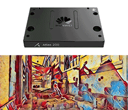

|
News
06/2020, two papers have been accepted by ICML 2020.
02/2020, seven papers have been accepted by CVPR 2020.
01/2020, one paper has been accepted by IEEE TNNLS.
11/2019, three papers have been accepted by AAAI 2020.
|
|
Recent Projects
Actually, model compression is a kind of technique for developing portable deep neural networks with lower memory and computation costs. I have done several projects in Huawei including some smartphones' applications in 2019 and 2020 (e.g. Mate 30 and Honor V30). Currently, I am leading the AdderNet project, which aims to develop a series of deep learning models using only additions (Discussions on Reddit).
|
|

|
AI on Ascend: Real-Time Video Style Transfer
Huawei Developer Conference (HDC) 2020 | Online Demo
This project aims to develop a video style transfer system on the Huawei Atlas 200 DK AI developer Kit. The latency of the original model for processing one image is about 630ms. After accelerating it using our method, the lantency now is about 40ms.
|
|
Research
I'm interested in efficient models for computer vision including classification, detection, segmentation, super-resolution, etc.
Conference papers:
- Learning Binary Neurons with Noisy Supervision
Kai Han, Yunhe Wang, Yixing Xu, Chunjing Xu, Enhua Wu, Chang Xu
ICML 2020 | to appear
- Neural Architecture Search in a Proxy Validation Loss Landscape
Yanxi Li, Minjing Dong, Yunhe Wang, Chang Xu
ICML 2020 | to appear
- On Positive-Unlabeled Classification in GAN
Tianyu Guo, Chang Xu, Jiajun Huang, Yunhe Wang, Boxin Shi, Chao Xu, Dacheng Tao
CVPR 2020 | paper
- CARS: Continuous Evolution for Efficient Neural Architecture Search
Zhaohui Yang, Yunhe Wang, Xinghao Chen, Boxin Shi, Chao Xu, Chunjing Xu, Qi Tian, Chang Xu
CVPR 2020 | paper | code
- AdderNet: Do we really need multiplications in deep learning?
Hanting Chen*, Yunhe Wang*, Chunjing Xu, Boxin Shi, Chao Xu, Qi Tian, Chang Xu
CVPR 2020 (* equal contribution) | paper | code
Oral Presentation
- A Semi-Supervised Assessor of Neural Architectures
Yehui Tang, Yunhe Wang, Yixing Xu, Hanting Chen, Boxin Shi, Chao Xu, Chunjing Xu, Qi Tian, Chang Xu
CVPR 2020 | paper
- Hit-Detector: Hierarchical trinity architecture search for object detection
Jianyuan Guo, Kai Han, Yunhe Wang, Chao Zhang, Zhaohui Yang, Han Wu, Xinghao Chen, Chang Xu
CVPR 2020 | paper | code
- Frequency Domain Compact 3D Convolutional Neural Networks
Hanting Chen, Yunhe Wang, Han Shu, Yehui Tang, Chunjing Xu, Boxin Shi, Chao Xu, Qi Tian, Chang Xu
CVPR 2020 | paper
- GhostNet: More Features from Cheap Operations
Kai Han, Yunhe Wang, Qi Tian, Jianyuan Guo, Chunjing Xu, Chang Xu
CVPR 2020 | paper | code
- Beyond Dropout: Feature Map Distortion to Regularize Deep Neural Networks
Yehui Tang, Yunhe Wang, Yixing Xu, Boxin Shi, Chao Xu, Chunjing Xu, Chang Xu
AAAI 2020 | paper | code
- DropNAS: Grouped Operation Dropout for Differentiable Architecture Search
Weijun Hong, Guilin Li, Weinan Zhang, Ruiming Tang, Yunhe Wang, Zhenguo Li, Yong Yu
IJCAI 2020 | to appear
- Distilling Portable Generative Adversarial Networks for Image Translation
Hanting Chen, Yunhe Wang, Han Shu, Changyuan Wen, Chunjing Xu, Boxin Shi, Chao Xu, Chang Xu
AAAI 2020 | paper
- Efficient Residual Dense Block Search for Image Super-Resolution
Dehua Song, Chang Xu, Xu Jia, Yiyi Chen, Chunjing Xu, Yunhe Wang
AAAI, 2020 | paper | code
- Positive-Unlabeled Compression on the Cloud
Yixing Xu, Yunhe Wang, Hanting Chen, Kai Han, Chunjing Xu, Dacheng Tao, Chang Xu
NeurIPS 2019 | paper | code | supplement
- Data-Free Learning of Student Networks
Hanting Chen,Yunhe Wang, Chang Xu,Zhaohui Yang,Chuanjian Liu,Boxin Shi,Chunjing Xu,Chao Xu,Chang Xu
ICCV 2019 | paper | code
- Co-Evolutionary Compression for Unpaired Image Translation
Han Shu, Yunhe Wang, Xu Jia, Kai Han, Hanting Chen, Chunjing Xu, Chang Xu, Chang Xu
ICCV 2019 | paper | code
- Searching for Accurate Binary Neural Architectures
Mingzhu Shen, Kai Han, Chunjing Xu, Yunhe Wang
ICCV Neural Architectures Workshop 2019 | paper
- LegoNet: Efficient Convolutional Neural Networks with Lego Filters
Zhaohui Yang, Yunhe Wang, Hanting Chen, Chuanjian Liu, Boxin Shi, Chao Xu, Chunjing Xu, Chang Xu
ICML 2019 | paper | code
- Learning Instance-wise Sparsity for Accelerating Deep Models
Chuanjian Liu, Yunhe Wang, Kai Han, Chunjing Xu, Chang Xu
IJCAI 2019 | paper
- Attribute Aware Pooling for Pedestrian Attribute Recognition
Kai Han, Yunhe Wang, Han Shu, Chuanjian Liu, Chunjing Xu, Chang Xu
IJCAI 2019 | paper
- Crafting Efficient Neural Graph of Large Entropy
Minjing Dong, Hanting Chen, Yunhe Wang, Chang Xu
IJCAI 2019 | paper
- Low Resolution Visual Recognition via Deep Feature Distillation
Mingjian Zhu, Kai Han, Chao Zhang, Jinlong Lin, Yunhe Wang
ICASSP 2019 | paper
- Learning Versatile Filters for Efficient Convolutional Neural Networks
Yunhe Wang, Chang Xu, Chunjing Xu, Chao Xu, Dacheng Tao
NeurIPS 2018 | paper | code | supplement
- Towards Evolutionary Compression
Yunhe Wang, Chang Xu, Jiayan Qiu, Chao Xu, Dacheng Tao
SIGKDD 2018 | paper
- Autoencoder Inspired Unsupervised Feature Selection
Kai Han, Yunhe Wang, Chao Zhang, Chao Li, Chao Xu
ICASSP 2018 | paper | code
- Adversarial Learning of Portable Student Networks
Yunhe Wang, Chang Xu, Chao Xu, Dacheng Tao
AAAI 2018 | paper
- Beyond Filters: Compact Feature Map for Portable Deep Model
Yunhe Wang, Chang Xu, Chao Xu, Dacheng Tao
ICML 2017 | paper | code | supplement
- Beyond RPCA: Flattening Complex Noise in the Frequency Domain
Yunhe Wang, Chang Xu, Chao Xu, Dacheng Tao
AAAI 2017 | paper
- Privileged Multi-Label Learning
Shan You, Chang Xu, Yunhe Wang, Chao Xu, Dacheng Tao
IJCAI 2017 | paper
- CNNpack: Packing Convolutional Neural Networks in the Frequency Domain
Yunhe Wang, Chang Xu, Shan You, Chao Xu, Dacheng Tao
NeurIPS 2016 | paper | supplement
Journal papers:
- Learning student networks via feature embedding
Hanting Chen, Yunhe Wang, Chang Xu, Chao Xu, Dacheng Tao
IEEE TNNLS 2020 | paper
- Packing Convolutional Neural Networks in the Frequency Domain
Yunhe Wang, Chang Xu, Chao Xu, Dacheng Tao
IEEE TPAMI 2018 | paper
- DCT Regularized Extreme Visual Recovery
Yunhe Wang, Chang Xu, Shan You, Chao Xu, Dacheng Tao
IEEE TIP 2017 | paper
- DCT inspired feature transform for image retrieval and reconstruction
Yunhe Wang, Miaojing Shi, Shan You, Chao Xu
IEEE TIP 2016 | paper
|
|
Service
Senior Program Committee Members of IJCAI 2020 and IJCAI 2019.
Journal Reviewers of IJCV, IEEE T-IP, IEEE T-NNLS, IEEE TMM, IEEE T-KDE, etc.
Program Committee Members of NeurIPS 2020, ICML 2020, ECCV 2020, CVPR 2020, ICLR 2020, AAAI 2020, ICCV 2019, CVPR 2019, ICLR 2019, AAAI 2019, IJCAI 2018, AAAI 2018, NeurIPS 2018, etc.
|
|
Awards
2017, Google PhD Fellowship
2017, Baidu Scholarship
2017, President's PhD Scholarship, Peking University
2017, National Scholarship for Graduate Students
2016, National Scholarship for Graduate Students
|
|